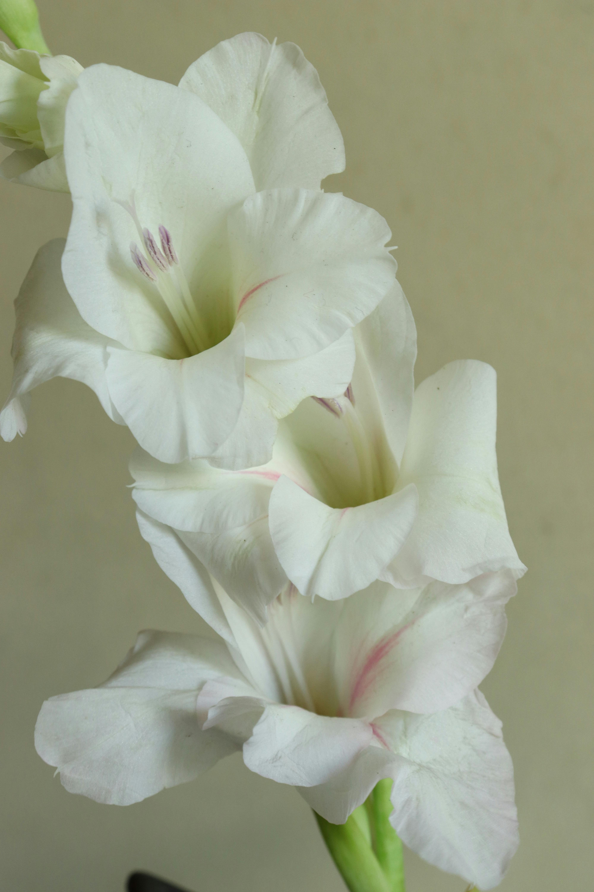
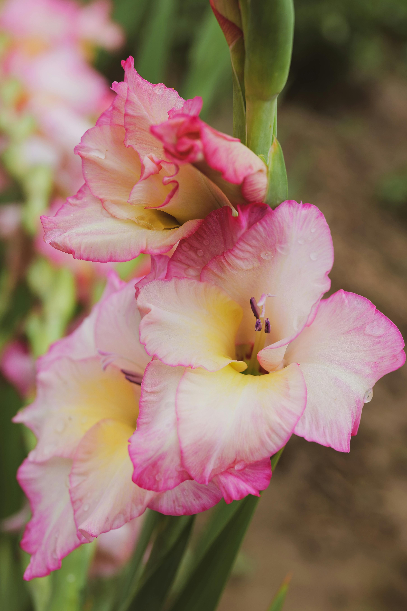
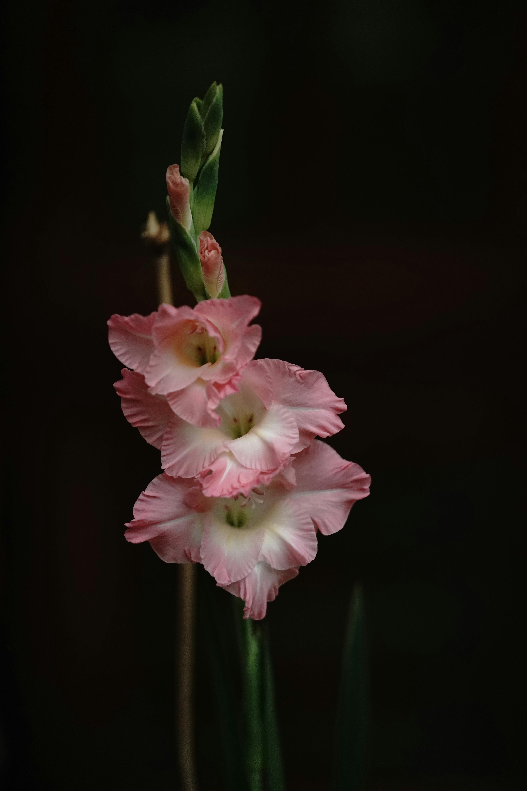

Gladioli, also known as gladiolus or sword lilies, are vibrant and striking flowers originating from various regions of Africa, particularly South Africa, as well as parts of the Mediterranean and Asia. These tall, spiky flowers belong to the iris family (Iridaceae) and are named after the Latin word gladius, meaning "sword," due to their long, sword-like leaves. With more than 260 wild species, gladioli have a diverse and colorful heritage, thriving in climates that range from tropical to temperate. Many species come from the grasslands and rocky regions of South Africa, where they have evolved to withstand periods of drought and adapt to warm, sunny conditions.
In terms of growth and cultivation, gladioli are well-suited to mild climates with plenty of sunlight, but they can also be cultivated in gardens worldwide, especially in warmer regions with well-drained soil. They grow best in sandy or loamy soil that drains well and prefer a location that receives full sun for at least six hours per day. In regions with colder winters, gladiolus corms (their bulb-like storage organs) are typically planted in spring after the threat of frost has passed and are dug up in autumn to prevent freezing. This seasonal planting is popular among gardeners who wish to enjoy gladioli's tall, dramatic blooms each summer.
Historically, gladioli have also had symbolic importance. In Victorian England, they were associated with strength of character and moral integrity. Today, gladioli are commonly used in floral arrangements and gardens, valued for their bright colors and impressive height. The flowers come in almost every color imaginable, from pure whites to deep purples, vibrant pinks, oranges, yellows, and even multicolored varieties, adding striking visual appeal to bouquets and landscapes alike. Through selective breeding, horticulturists have developed numerous hybrids that are hardy and adaptable to different climates. This has made gladioli widely popular and accessible to gardeners globally, from Europe and North America to Australia and Asia. Though they are native to Africa, gladioli’s versatility and resilience have allowed them to flourish in many parts of the world, adding a touch of elegance and vibrancy wherever they grow.
Gladioli are widely cherished for their aesthetic appeal and versatility, making them a favorite in various decorative and symbolic settings. One of their most common uses is in ornamental gardens, where their tall, colorful flower spikes bring striking visual interest. Their height and vibrant hues make gladioli perfect for adding vertical elements to garden beds, creating natural borders, or serving as focal points among lower-growing plants. When they bloom, gladioli bring a lush, elegant look to gardens, adding a vivid array of colors and textures that make the landscape feel dynamic and alive.
In addition to garden use, gladioli are highly valued in floral arrangements and as cut flowers. Their long stems and varied, bold colors make them ideal for bouquets, where they often serve as a central feature in both formal and informal floral designs. Because they are long-lasting as cut flowers, gladioli are frequently used in wedding arrangements, bouquets, and floral displays for special events. Their distinctive, spiky blossoms create a sense of sophistication and drama, adding an element of elegance and height that enhances the composition of any arrangement.
Gladioli also hold symbolic meanings, which adds another layer to their popularity. In the Victorian era, they were associated with strength of character and moral integrity, due to their sword-like shape and striking presence. Today, gladioli are often used in floral arrangements to convey admiration, remembrance, and sincerity, making them a popular choice for memorial services and other sentimental occasions. The symbolism and beauty of gladioli make them a meaningful gift and a powerful expression of deep respect or sympathy. In all these ways, gladioli continue to be appreciated not only for their beauty but also for the unique messages they convey.
Not only the cultivated ones in parks and gardens, unfolding immaculate petals on a terrace or trellis, and not just the wild ones, kissed by elegant birds in jungle foliage, or brightening roadsides and meadows, blossoming anyplace that anything can blossom, but thanks also to flowers blooming in paintings, on carpets, pottery, fabrics of dresses and draperies or wherever the real or invented colors and shapes of flowers lift the mood of a scene, as they are snipped from bushes, gathered in cordless bunches, tied in ribbons or arranged in rare bouquets for precious vases. Perfect by nature for gift and centerpiece, they perfume ballrooms, backyards and prairies, and, indoors or out the window, they gladden celebrations and refresh every country and season, for, even in iciest winter. The word flower thrives in every language, adorning what everyone says and imagines with the beautiful thought of flowers which teach by timeless example that life goes by anyway; you might as well flower.
— Kate Farrell’s website